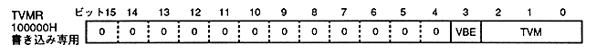

Return to previous page ｜ Return to menu ｜ Go to next page
-
4.1 TV mode selection register
- TV mode selection register (TVMR, TV mode register) specifies V blank erase permission and TV display mode. This is a write-only 16-bit register located at 100000H. The value is undefined after power-on or reset, so be sure to set the TV display mode. Fix unused bits to 0.

- V blank erase write enable bit: V blank erase / write enable (VBE), bit 3
-
- When VBE = 1, erase write is performed during V blank. VBE = 1 can be set only when FCM = 1 and FCT = 1 are written. For details, refer to “ 4.2 Frame buffer switching mode register ”.
- When setting the VBE value to 0 or 1, be sure to set the TVM with the same value as before.
- Set VBE immediately after the V blank IN interrupt. Access is prohibited from the first H blank IN interrupt after the V blank IN interrupt to the next H blank IN interrupt.
- TV mode select bit: TV mode select (TVM), bits 2-0
-
- Specify the TV display mode.
- Please refer to " Screen mode and display range " for the coordinate value of the displayed area.
- When TVM = 010B (2), the frame buffer has only 512 x 256 pixels, so if you tilt the screen greatly, a transparent area will appear on the display screen.
- When HDTV is specified (TVM = 100B (4)), only non-interlace can be set.When rotation display is specified (TVM = 010B (2), 011B (3)), only non-interlace and single density interlace can be set. Make sure to disable double interlace (DIE bit = 0) in the frame buffer switching mode register. For details, refer to “ 4.2 Frame buffer switching mode register ”.
- Set TVM from the second H blank IN interrupt after the V blank IN interrupt to the H blank IN interrupt immediately after the V blank OUT interrupt.
Return to previous page ｜ Return to menu ｜ Go to next page